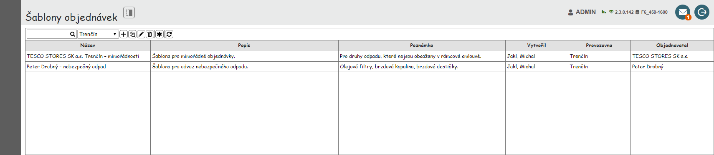
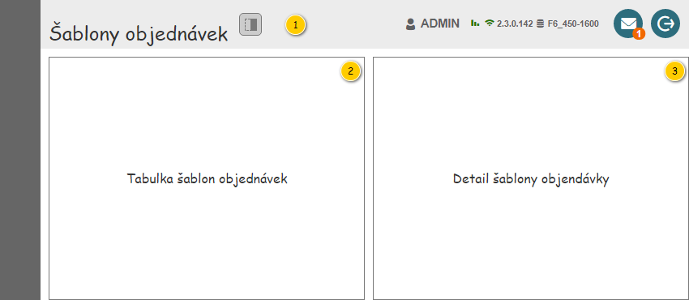
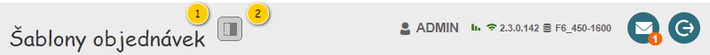
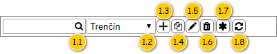
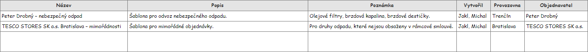
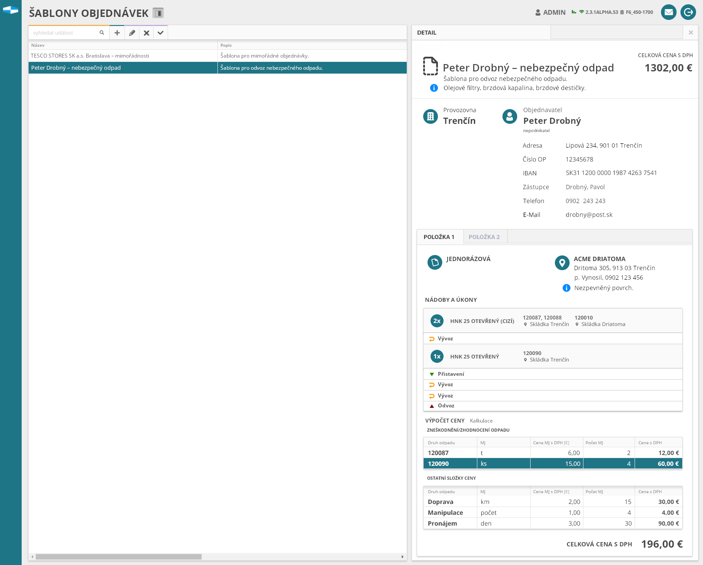

Stručný popis
Uživatelské rozhraní poskytuje uživateli přístup k šablonám objednávek. Dále mu umožňuje spouštět CRUD akce pro šablony objednávky a využít nástroje pro filtrování a řazení šablon objednávek.
Uživatelské rozhraní
Nejdříve jsou uvedeny drátové diagramy celé obrazovky (se zobrazeným detailem a bez něj). Dále jsou pak popsány jednotlivé ucelené části uživatelského rozhraní.


Rozložení
Drátový diagram

Přehled UI komponent
| Callout | Skupina |
|---|---|
| 1 | Nadpis přehledu |
| 2 | Tabulka šablon objednávek |
| 3 | Detail šablony objednávky |
Nadpis přehledu
Nadpis je umístěn v hlavičce aplikace (700UI03: Hlavička aplikace).
Drátový diagram

Přehled UI komponent
| Callout | Komponenta | Nadpis | Typ komponenty | Příklad hodnoty | Hodnota | Výchozí hodnota | Formát | Zpřístupněná | Viditelná | Chování | Validace | Poznámka |
|---|---|---|---|---|---|---|---|---|---|---|---|---|
| 1 | Nadpis přehledu | – | Label | – | Šablony objednávek | – | – | – | Vždy | – | – | – |
| 2 | Zobrazení/skrytí detailu | – | ToggleButton | – | – | – | – | Vždy | Vždy | Pokud je tlačítko stisknuto, je zobrazen detail. Pokud tlačítko stisknuto není, je detail skrytý. | – | – |
Tabulka šablon objednávek
Drátový diagram


Přehled UI komponent
Pokud uživatel vjede myší na prvek nástrojové lišty, je zobrazen ToolTip. V rámci ToolTipu, pokud není uvedeno jinak, je zobrazen text ve sloupci Komponenta.
| Callout | Komponenta | Nadpis | Typ komponenty | Příklad hodnoty | Hodnota | Výchozí hodnota | Formát | Zpřístupněná | Viditelná | Chování | Validace | Poznámka |
|---|---|---|---|---|---|---|---|---|---|---|---|---|
| 1 | Nástrojová lišta tabulky | – | – | – | – | – | – | – | Vždy | – | – | ToolTip je zobrazen pouze pro komponenty uvnitř nástrojové lišty. |
| 1.1 | Textový filtr | – | Full Text Filter (viz Ovládací prvky třetích stran) SearchBox | – | – | – | Pokud není v rámci ovládacího prvku zadán hledaný text, jsou na pozadí (placeholder) vypsány názvy sloupců, podle kterých je filtrováno (viz sloupce Chování). Mezi jednotlivými názvy sloupců je použit oddělovač: „/“. Tento text je zobrazován i v rámci bublinkové nápovědy ovládacího prvku. Chování je pak řešeno v rámci použité komponenty. | Vždy | Vždy | Psaním filtruje řádky dle sloupců:
Poznámka: Ve sloupcích je vyhledáváno fulltextově. | – | – |
| 1.2 | Vybrat provozovnu | – | ComboBox | Trenčín | Entita Provozovna. Dostupné jsou takové Provozovny, které splňují zároveň všechny uvedené podmínky:
Výchozí hodnota je první Provozovna, na kterou má daný Uživatel právo. Kromě dostupných Provozoven je obsažena i možnost Nevybráno, která je zobrazena jako první. Pokud má uživatel právo na právě jednu Provozovnu, není možnost Nevybráno k dispozici. | Nevybráno. | Vždy | Pokud má Uživatel právo na více než jednu Provozovnu. | Zobrazí řádky dle vybrané Provozovny:
| – | Obsahuje hodnotu Nevybráno, která je umístěna jako první v rozbalovací nabídce komponenty. | |
| 1.3 | Vytvořit šablonu objednávky | – | Button | – | – | – | – | Vždy | Uživatel splňuje vstupní podmínky 102UC01. | Spustí , na vstup UC jsou předány následující hodnoty:
| – | – |
| 1.4 | Vytvořit kopii šablony objednávky | – | Button | – | – | – | – | Vždy | Uživatel splňuje vstupní podmínky 102UC04. | Spustí , na vstup UC jsou předány následující hodnoty:
| – | – |
| 1.5 | Upravit šablonu objednávky | – | Button | – | – | – | – | Vždy | Uživatel splňuje vstupní podmínky 102UC03. | Spustí 102UC03: Upravit šablonu objednávky, na vstup UC jsou předány následující hodnoty:
| – | – |
| 1.6 | Smazat šablonu objednávky | – | Button | – | – | – | – | Vždy | Uživatel splňuje vstupní podmínky 102UC05. | Spustí 102UC05: Smazat šablonu objednávky, na vstup UC jsou předány následující hodnoty:
| – | – |
| 1.7 | Založit objednávku ze šablony | – | Button | – | – | – | – | Vždy | Uživatel splňuje vstupní podmínky 100UC02. | Spustí , na vstup UC jsou předány následující hodnoty:
| – | – |
| 1.8 | Obnovit data | – | Button | – | – | – | – | Vždy | Vždy | Načte aktuální data pro tabulku. | – | – |
| 2 | Tabulka s šablonami objednávek | – | Grid | – | Kolekce entity Šablona objednávky. | – | – | Vždy | Vždy | Výběr řádku spustí: 102UC07: Zobrazit detail šablony objednávky. | – | – |
Tabulky
Přehled šablon objednávek
Pro zobrazení záznamů v přehledu je použita běžná tabulka, viz 700UI01: Komponenty – tabulka. Z toho vyplývají jak její základní vlastnosti, tak i výchozí nastavení (např. počet záznamů, které je možné označit).

| Sloupec | Nadpis | Možnost editace | Komponenta | Datový typ | Příklad hodnoty | Hodnota | Výchozí hodnota | Formát | Možnosti sloupce | Zpřístupněný | Viditelný | Chování | Validace | Poznámka |
|---|---|---|---|---|---|---|---|---|---|---|---|---|---|---|
| Název | Název | Ne | TextBox | Text | Peter Drobný – nebezpečný odpad | Entita Šablona objednávky. | – |
| Nikdy | Vždy | – | – | – | |
| Popis | Popis | Ne | TextBox | Text | Šablona pro odvoz nebezpečného odpadu. | Entita Šablona objednávky. | – |
| Nikdy | Vždy | – | – | – | |
| Poznámka | Poznámka | Ne | TextBox | Text | Olejové filtry, brzdová kapalina, brzdové destičky. | Entita Šablona objednávky. | – |
| Nikdy | Vždy | – | – | – | |
| Vytvořil | Vytvořil | Ne | TextBox | Text | Jakl, Michal | Entita Uživatel – atribut Vytvořil entity Šablona objednávky. | – | Pokud není dostupné Osobní číslo:
|
| Nikdy | Vždy | – | – | – |
| Provozovna | Provozovna | Ne | TextBox | Text | Trenčín | Entita Provozovna – atribut Provozovna entity Objednávka – atribut Objednávka entity Šablona objednávky. | – |
| Nikdy | Vždy | – | – | – | |
| Objednavatel | Objednavatel | Ne | TextBox | Text | Peter Drobný | Entita Zákazník – atribut Objednavatel entity Objednávka – atribut Objednávka entity Šablona objednávky. | – |
| Nikdy | Vždy | – | – | – |
Detail šablony objednávky
Viz 102UI03: Detail šablony objednávky.
Grafický návrh
Pozor: Zobrazené hodnoty jsou pouze ilustrativní.
Pozor: Ovládací prvky v nástrojové liště jsou pouze ilustrativní.

Revize
25. 4. 2024: Tomáš Nadrchal
| Odkaz | Stručný popis změny |
|---|---|
| Tabulka šablon objednávek | Revize komponenty pro fulltextový filtr (naznačeno modře). |
31. 8. 2023: Tomáš Nadrchal
| Odkaz | Stručný popis změny/doplnění |
|---|---|
| Tabulka šablon objednávek | Revize dostupných provozoven (naznačeno modře). |
10. 3. 2022: Tomáš Nadrchal
| Odkaz | Stručný popis změny/doplnění |
|---|---|
| Tabulka šablon objednávek | Revize kontextové nabídky textového filtru (naznačeno modře). ID-054 |
24. 11. 2020: Tomáš Nadrchal
| Odkaz | Stručný popis změny/doplnění |
|---|---|
| Tabulka šablon objednávek | Doplněno chování při více označených záznamech zároveň (naznačeno modře). |
| Přehled šablon objednávek | Doplněny obecné informace o použité tabulce (naznačeno modře). |
17. 6. 2019: Tomáš Nadrchal
| Odkaz | Stručný popis změny/doplnění |
|---|---|
| Tabulka šablon objednávek | Aktualizován popis dostupných Provozoven v nástrojové liště (komponenta 1.2, naznačeno modře). |
| Přehled šablon objednávek | Aktualizován popis – možnosti práce se sloupci tabulky a zobrazení ToolTipu tlačítek nástrojové lišty (naznačeno modře). |